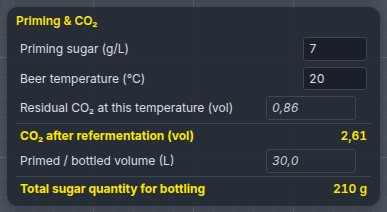
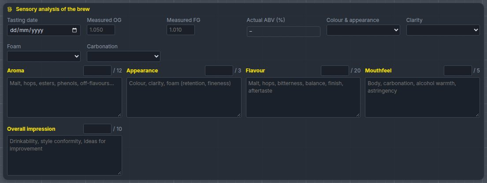
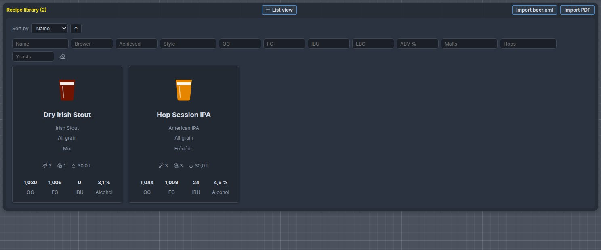
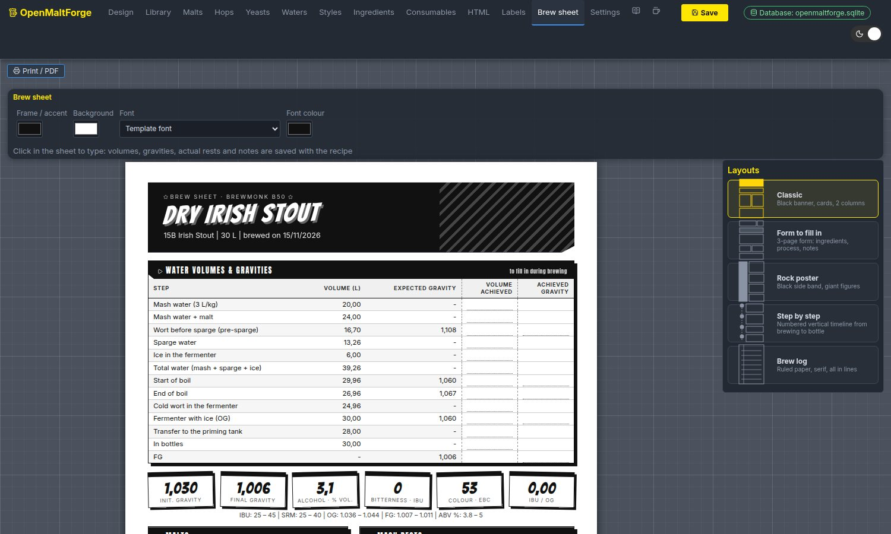
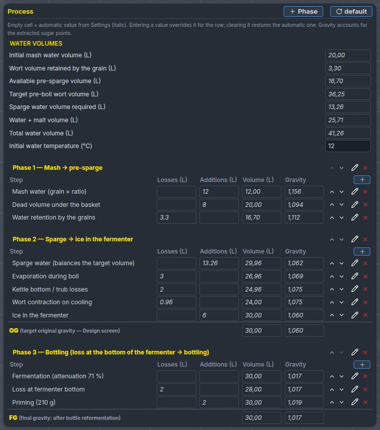

Documentación de OpenMaltForge
OpenMaltForge (antes OpenBrew, y BrewCraft antes de la versión 5.0.0) es una aplicación de escritorio para diseñar recetas de cerveza: cálculo de la densidad, el amargor y el color, agua y minerales, proceso de elaboración, costes, stock y lista de la compra, biblioteca de recetas, etiquetas y hoja de elaboración imprimibles.
Primeros pasos
- Linux: instale el paquete
openmaltforge_<versión>_amd64.deb(menú «OpenMaltForge») o ejecute directamente el programaopenmaltforge_<versión>_linux_amd64. - Windows: ejecute
OpenMaltForge_<versión>.exe. - macOS: descomprima
OpenMaltForge_<versión>_macos_apple_silicon.zip(Mac M1, M2…) o…_macos_intel.zip, arrastreOpenMaltForge.appa Aplicaciones; en el primer inicio, clic derecho en la aplicación y luego «Abrir» (aplicación no firmada por Apple).
OpenMaltForge se abre en su propia ventana (motor del navegador Chrome, Chromium, Edge o Brave instalado en el equipo).
Todos los datos se guardan en un único archivo: ~/OpenMaltForge/openmaltforge.sqlite (carpeta personal,
subcarpeta OpenMaltForge). En el primer inicio se recupera automáticamente la base de OpenBrew
(~/OpenBrew/openbrew.sqlite), si no la de BrewCraft (~/BrewCraft/brewcraft.sqlite), o, en su defecto, una base de una versión 3.x
(brewcraft_3.x.sqlite); el archivo antiguo no se modifica.
OpenMaltForge se abre siempre en la pantalla Diseño.
Una base nueva se rellena con los datos iniciales: maltas, lúpulos, levaduras, estilos BJCP 2021, aguas, ingredientes, fuentes.
La interfaz

- Menú: Diseño, Biblioteca, las bases (Maltas, Lúpulos, Levaduras, Aguas, Estilos, Ingredientes, Consumibles), HTML, Etiquetas, Hoja de elaboración, Ajustes, luego el icono Documentación (libro abierto) que muestra esta página).
- Guardar: escribe inmediatamente todos los datos en la base. También hay un guardado automático (cada 5 minutos por defecto, ajustable en Ajustes › Preferencias).
- Indicador «Base: openmaltforge.sqlite»: verde cuando todo está guardado. Si hay un problema (programa cerrado, escritura rechazada), aparece un aviso naranja; un clic vuelve a intentar el guardado.
- Zona de notificaciones (bajo el menú): mensajes temporales en verde (guardado, cálculo), errores en rojo, avisos persistentes en naranja (por ejemplo una relación de empastado demasiado alta para la cuba). Varios mensajes se muestran uno al lado del otro.
- Tema: el interruptor sol / luna, arriba a la derecha, cambia entre el tema oscuro y el claro; la elección se recuerda.
- Pie de página: licencia (GNU GPL v3, clic para leer el texto) y número de versión.
Diseño de una receta
La pantalla Diseño reúne la receta en curso. Todo se recalcula con cada entrada.
Un doble clic en el título de una sección pliega solo esa sección: queda su título, seguido de un chevrón que indica que está plegada, y su línea amarilla, con el mismo ancho. Un doble clic en el título de un radar (Lúpulos, Maltas, Levadura) pliega toda la fila de radares. Otro doble clic la despliega; la elección se recuerda.
Receta y objetivos
- Receta, Estilo (estilos BJCP 2021), Volumen a embotellar, Relación de empastado (L/kg), fechas de elaboración y de embotellado.
- Fechas:
- Fecha de elaboración: vacía en una receta nueva (＋ Nueva receta). Indicarla significa que la cerveza está elaborada: los componentes de la receta (maltas, lúpulos, levaduras, ingredientes, consumibles, aguas minerales) se descuentan de las existencias, una sola vez, y un mensaje indica cuántos, y la receta lleva la marca verde «Realizado» en la Biblioteca (lista y tarjetas); borrarla devuelve los componentes a las existencias y quita la marca. También sirve para el número de lote (
año#rango) de las etiquetas y del HTML. Cada cambio de la fecha de elaboración guarda la receta automáticamente (Biblioteca y base), como el botón Guardar. - Fecha de embotellado: indicarla hace aparecer la sección Análisis organoléptico del lote; el HTML indica la fecha de embotellado y el análisis. No toca ni las existencias ni la marca «Realizado». No puede ser anterior a la fecha de elaboración: esa entrada se rechaza (mensaje en rojo) y se restablece el valor anterior; del mismo modo, la fecha de elaboración no puede ser posterior a la de embotellado.
- Fecha de elaboración: vacía en una receta nueva (＋ Nueva receta). Indicarla significa que la cerveza está elaborada: los componentes de la receta (maltas, lúpulos, levaduras, ingredientes, consumibles, aguas minerales) se descuentan de las existencias, una sola vez, y un mensaje indica cuántos, y la receta lleva la marca verde «Realizado» en la Biblioteca (lista y tarjetas); borrarla devuelve los componentes a las existencias y quita la marca. También sirve para el número de lote (
- DI objetivo, IBU objetivo y botón Calcular: ajustan la receta para alcanzar la densidad inicial y el amargor deseados, sin cambiar su composición.
- Los objetivos: DI objetivo = densidad inicial buscada (p. ej.
1,060); IBU objetivo = amargor buscado en IBU (p. ej.25). Una receta nueva los toma de los Valores por defecto de los Ajustes («DI objetivo por defecto», «IBU objetivo por defecto»). Al modificar uno de ellos, el cursor correspondiente del balance se coloca enseguida en el nuevo objetivo, y la receta se recalcula (como con Calcular) en cuanto suelta las flechas del campo, pulsa Intro o sale del campo. La tabla de proceso también los usa (la DI objetivo fija la densidad tras el hielo). - Antes del cálculo: si introdujo las maltas o los lúpulos en porcentajes y no suman 100 %, una ventana propone ajustarlos a 100 % (regla de tres); si lo rechaza, no se calcula nada.
- 1. Las maltas: OpenMaltForge calcula la DI de la receta a partir del peso de cada malta, su potencial (base Maltas), el rendimiento del equipo y el volumen a embotellar. Todas las maltas se multiplican por un mismo factor = (DI objetivo − 1) ÷ (DI actual − 1). Las proporciones entre maltas no cambian, ni por tanto el color relativo ni el carácter de la receta.
- 2. Los lúpulos: con la nueva DI se recalcula el amargor (fórmula de Tinseth, multiplicada por el coeficiente del uso: First Wort, Ebullición, Whirlpool, Hopstand, Dry hop — Ajustes › Coeficientes de utilización del lúpulo). Todos los lúpulos cuyo coeficiente no es nulo se multiplican por un mismo factor = IBU objetivo ÷ IBU actuales. Para que un uso no cambie (por ejemplo el dry hop), ponga su coeficiente a 0.
- Ejemplo: 5 kg de maltas dan una DI de 1,050 y 40 g de lúpulo 20 IBU; con una DI objetivo de 1,060 y 25 IBU objetivo, las maltas pasan a 6 kg (× 60/50 = × 1,2) y luego los lúpulos se ajustan para 25 IBU a la nueva densidad.
- Después del cálculo: los pesos se redondean (al gramo para las maltas, a la décima de gramo para los lúpulos) y los porcentajes vuelven al modo peso. El balance de la receta, los costes y el proceso se recalculan, la receta se guarda y una notificación verde recuerda la DI y los IBU objetivo. Las cantidades ya presentes en la lista de la compra no cambian (están fijadas): un triángulo naranja señala las que pasan a ser insuficientes.
- Mensajes de error (en rojo): objetivos vacíos; DI fuera de 1,010 a 1,200 o IBU nulos; ninguna malta reconocida en la base (o peso nulo); ningún lúpulo que contribuya (nombre desconocido, peso o tiempo nulo, o todos los usos con coeficiente 0). En esos casos la receta no se modifica.
- Los objetivos: DI objetivo = densidad inicial buscada (p. ej.
- ＋ Nueva receta: crea una receta nueva; los objetivos y la relación toman los valores por defecto de los Ajustes y la lista de la compra se vacía. Las tablas se rellenan al azar desde sus bases: una malta base (EBC ≤ 10) y otras dos maltas, dos lúpulos (amargor 60 min, aroma 10 min) y una levadura; las cantidades se ajustan luego a los objetivos (DI, IBU) como con el botón Calcular. La fecha de elaboración queda vacía.
- Radares aromáticos de maltas, lúpulos y levaduras: perfil de la receta, valor mostrado al pasar sobre un punto, ampliación con un clic (Esc para cerrar), exportación como imagen con los botones PNG (fondo oscuro o claro).
Maltas, lúpulos, levaduras

- El botón ＋ del título añade una línea; la cruz roja la elimina.
- Nombre: escriba al menos 3 letras para elegir en la base (la maltería se indica tras el nombre de las maltas).
- Peso o porcentaje: introduzca los pesos, o los porcentajes (el peso se calcula entonces; volver a introducir un peso pasa de nuevo al modo peso).
- Lúpulos: peso, uso (First Wort, Ebullición, Whirlpool, Hopstand, Dry hop) y tiempo; los IBU se calculan con la fórmula de Tinseth, ponderada por los coeficientes de utilización de los Ajustes.
- Levaduras: número de sobres, atenuación y floculación de la cepa.
- Carrito al final de la línea: añade el componente a la lista de la compra (véase Lista de la compra). Es naranja cuando el stock no basta y verde cuando el componente ya está en la lista.

Agua y minerales

- Elija una o varias aguas (base «Aguas») y su proporción, en litros o en porcentaje.
- Los iones (Cl, SO4, Ca, Mg, Na, HCO3) de la mezcla se comparan con los rangos del estilo; la línea de adiciones (mg/L) calcula las cantidades de minerales, que se añaden automáticamente a los ingredientes de la receta (líneas «— auto»).
Ingredientes y consumibles

Escalones, cantidades de agua, priming



Resumen de la receta y costes

Densidad inicial, IBU (justo debajo, los dos cursores desplazables), densidad final, atenuación, floculación, color (EBC / SRM), alcohol, relaciones IBU / DI y RBR, con el rango esperado para el estilo elegido, y luego el color estimado de la cerveza.
Cursores desplazables: los cursores DI e IBU tienen un pequeño tirador redondo encima. Arrástrelo con el ratón: la DI objetivo o los IBU objetivo varían como el valor del cursor (el campo lo sigue en directo); al soltar, la receta se recalcula como con el botón Calcular y el cursor se queda donde lo soltó. Los demás cursores son indicadores y no se mueven.

Análisis sensorial

Fecha de cata, densidades medidas, ABV real, color, limpidez, espuma, carbonatación, y luego notas y comentarios por criterio (aroma, aspecto, sabor, sensación en boca, impresión general).
Entrada de expresiones matemáticas
En cualquier campo de entrada, un texto que empieza por = se calcula. El resultado sustituye a la fórmula al validar con Intro o al salir del campo, y se tiene en cuenta como una entrada normal.

=4,5+0,25 en el peso (kg) de la primera malta…
| Elemento | Escritura | Ejemplo | Resultado |
|---|---|---|---|
| Suma, resta | + - | =4,5+0,25 | 4,75 |
| Multiplicación, división | * o ×, / o ÷ | =3*(2+1,5)/4 | 2,625 |
| Potencia | ^ | =2^10 | 1024 |
| Paréntesis | ( ) | =(20-12)*1,5 | 12 |
| Porcentaje | % tras un número (÷ 100) | =30*85% | 25,5 |
| Raíz cuadrada | sqrt( ) | =sqrt(16) | 4 |
| Valor absoluto | abs( ) | =abs(12-20) | 8 |
| Redondeo | round( ) | =round(40/3) | 13 |
| Número negativo | - delante | =-2+5 | 3 |
- La coma o el punto sirven de separador decimal (
4,5=4.5); los espacios se ignoran. - Prioridades habituales: paréntesis, luego potencia, luego multiplicación y división, luego suma y resta.
- En un campo numérico, la tecla = (o pegar un texto que empieza por
=) pasa el campo a entrada de texto mientras dura la fórmula. - Una fórmula no válida (paréntesis que falta, división por cero…) no se aplica: el campo parpadea en rojo y su información emergente indica «Fórmula no válida».
- El resultado se redondea a 12 cifras significativas.
=5,6*80%), convertir 12 oz a gramos (=12*28,35), completar un volumen (=30-4,2-1,5).Lista de la compra y stock

Adición automática
- Una malta, lúpulo, levadura, ingrediente, consumible o un agua mineral usado en la receta en curso entra en la lista en cuanto la receta agota su stock (cantidad necesaria ≥ stock); la cantidad propuesta es lo que falta (o la cantidad usada cuando el stock llega justo a cero). Para las aguas, son los litros de cada agua mineral de la mezcla; las aguas de red nunca se añaden.
- Sale automáticamente en cuanto el stock vuelve a bastar (por ejemplo al reducir la cantidad en la receta).
- Cantidades fijas: una vez un artículo está en la lista, su cantidad ya no cambia sola (botón «Calcular», modificación de una línea…). Si pasa a ser inferior a lo que falta, aparece un triángulo naranja junto a la cantidad (su información emergente indica lo que falta) y una notificación naranja señala los artículos afectados; corrija la cantidad para que desaparezcan.
- Los componentes no usados por la receta nunca se añaden, ni siquiera con un stock a cero.
- ＋ Nueva receta vacía la lista de la compra (adiciones manuales incluidas); después se rellena según la nueva receta.
- Componente retirado de la receta: cuando elimina un componente de la receta (o lo sustituye por otro), también sale de la lista de la compra — incluidos la malta, el lúpulo y la levadura propuestos por defecto en una receta nueva, y un artículo añadido con el carrito de la receta. Solo se quedan los artículos añadidos desde las pantallas de base (Maltas, Lúpulos…).
Adición manual
- Carrito al final de una línea de la receta: añade el componente si no está ya en la lista (cantidad que falta, si no la cantidad usada por la receta).
- Carrito de las pantallas de base (Maltas, Lúpulos…, aguas minerales): añade el artículo con la cantidad que falta para la receta, o una cantidad por defecto.
- Un artículo añadido a mano, o cuya cantidad modifica, nunca se retira automáticamente.
- La cruz retira un artículo; si sigue faltando para la receta, no se vuelve a añadir mientras el stock siga agotado.
- El icono de la impresora del título imprime la lista de la compra (o la guarda en PDF).
Botón info
- El botón ⓘ, justo antes de la cantidad a comprar de un artículo, da el estado de las existencias del componente: deje el ratón encima un segundo (o haga clic) para ver las existencias actuales, lo que necesita la receta actual, las existencias tras la compra (existencias actuales + cantidad a comprar) y lo que quedará tras la elaboración (en rojo si aún falta). Si la receta ya está realizada, la burbuja recuerda que su consumo ya está descontado; un artículo ausente de la base no tiene existencias conocidas.
Stock
- Cada base tiene una columna stock (kg para las maltas, g para lúpulos e ingredientes, sobres para las levaduras, unidades para los consumibles, litros para las aguas).
- Base Aguas: precio/L y stock (L) para las aguas minerales; su coste entra en el coste del agua de la receta.
- Cuando se indica la fecha de elaboración de la receta, sus componentes se descuentan de las existencias, una sola vez. Borrar la fecha los devuelve a las existencias.
Biblioteca e importaciones

- «Guardar» en el Diseño guarda la receta en curso en la biblioteca (actualizada si ya está).
- Lápiz: abre la receta en el Diseño. Cruz: la elimina (tras confirmación).
- Columnas: nombre, cervecero, realizado, estilo, DI, DF, IBU, EBC, ABV, maltas, lúpulos, levaduras; una línea de filtros y orden con un clic en la cabecera. El botón goma borra todos los filtros.
- Vista de tarjetas: presentación en fichas con el color de la cerveza.
- Número de elaboración:
año#rango(p. ej.2026#12), rango por fecha de elaboración entre las recetas del año, sin contar las recetas importadas. Aparece en las etiquetas y en el HTML. - Importar beer.xml (BeerXML 1.0) e Importar PDF (impresión de una receta de Brewfather, exportación PDF de BeerSmith): las recetas importadas son de solo lectura (cópielas para modificarlas). Importar beer.xml: un ingrediente ausente de la base se añade con los datos del archivo. Importar PDF: un cuadro «Correspondencia de ingredientes» propone vincular cada ingrediente desconocido a un ingrediente de la base; si no, queda como texto simple en la receta.

Bases de ingredientes
Pantallas Maltas, Lúpulos, Levaduras, Aguas, Estilos, Ingredientes, Consumibles: la base de referencia que usan las recetas.

- Una línea de filtros bajo las cabeceras (ver Filtros más abajo); orden con un clic en la cabecera; paginación de 15 líneas.
- Al final de la línea: lápiz (modificar la línea, si no es de solo lectura), duplicar, carrito (lista de la compra), cruz (eliminar). El ＋ de la cabecera añade una línea.
- Exportar CSV, Pegar CSV (importar líneas desde una hoja de cálculo) y Borrar todo.
- Notas aromáticas en una escala de 0 a 5; maltas, lúpulos y levaduras se comparan en un radar (hasta 5 nombres).
- Estilos: los 123 estilos BJCP 2021 con descripción, rangos (IBU, SRM, OG, FG, ABV) y perfiles de agua; ＋ Estilo para añadir uno. Los estilos «especiales» sin rangos (DI, DF, IBU, SRM, ABV: 21B, 27, 28 a 34) reciben, para cada rango ausente, el valor más bajo y el más alto de todos los estilos, para que el balance y el cálculo sigan siendo coherentes.
Filtros
Cada columna tiene su campo de filtro, justo bajo la cabecera. Varios filtros se suman: una línea solo se muestra si los cumple todos. El botón goma, al final de la línea, borra todos los filtros y vuelve al orden por nombre. En una columna numérica (EBC, alfa, atenuación, precio, stock, iones, rangos de los estilos…), el filtro acepta una expresión matemática; x designa el valor de la columna:
| Expresión | Líneas mostradas |
|---|---|
pils | columna de texto: el valor contiene «pils» (sin distinguir mayúsculas ni acentos) |
3 o =3 | x = 3; «3» se reescribe «=3» al salir del campo |
!=3 o <>3 | x ≠ 3 |
<3 | x < 3 |
<=3 | x ≤ 3 |
>4 | x > 4 |
>=4 | x ≥ 4 |
[2;4] | 2 ≤ x ≤ 4 (límites incluidos) |
]2;4[ | 2 < x < 4 (límites excluidos) |
]2;4] | 2 < x ≤ 4 |
[2;4[ | 2 ≤ x < 4 |
2;4 | x = 2 o x = 4 (lista: tantos valores como se quiera, p. ej. 2;4;6) |
- La coma o el punto sirven de separador decimal (
>=3,5=>=3.5); se aceptan números negativos (>-1) y se ignoran los espacios. - Una línea con la casilla vacía queda descartada por una expresión numérica.
- Columna stock:
1= en stock,0= sin stock. - En una columna de texto, o mientras la expresión esté incompleta (p. ej.
2;), lo escrito se busca como texto. La información emergente de los campos de filtro numéricos recuerda la sintaxis.


Vista HTML

La tabla EAU (agua) sigue las «Cantidades de agua» del Diseño (agua de empastado, agua de lavado, total empastado + lavado + otros); PARAMETRES da también la duración de la ebullición (sin número de cocción ni electricidad en este resultado), y la tabla PROCESS sigue las fases del Proceso.
Etiquetas

- Formatos (columna derecha): bandas, etiquetas rectangulares, redondas, chapas, collarines, plantillas ilustradas (cartel de concierto, saloon, vinilo, reggae, romántica, soul, punk…), con sus dimensiones y el número por hoja A4.
- Texto del código QR (una dirección o un texto libre), Volumen (cl), Número de etiquetas, colores del marco, de la fuente y del fondo.
- Fuente: lista desplegable en la que cada fuente se muestra en su propio estilo; escriba algunas letras para filtrar, flechas e Intro para elegir. Los botones A↑ / A↓ agrandan o reducen el texto.
- El logotipo de las etiquetas se elige en Ajustes › Logotipo de las etiquetas. El número de elaboración se calcula automáticamente.
- Imprimir / PDF: impresión de la hoja (o guardado en PDF).

Hoja de elaboración

- Cinco presentaciones: Clásico, Ficha para rellenar, Cartel rock, Paso a paso, Diario de elaboración.
- Colores del marco / acento, del fondo y de la fuente; elección de la fuente (cada nombre mostrado en su fuente).
- Se puede escribir directamente en la hoja: volúmenes, densidades y escalones realmente obtenidos, y notas de elaboración; todo se guarda con la receta.
- Imprimir / PDF.
Ajustes


- Equipo y proceso: nombre del equipo, volumen máximo de empastado (un campo rojo y un aviso lo indican cuando el agua de empastado + la malta lo alcanzan), rendimiento del empastado, volumen muerto bajo la cesta y tasa de evaporación horaria; Valores por defecto: calentamiento, enfriamiento, DI e IBU objetivo, relación de empastado (aplicados a cada receta nueva; la duración de la ebullición se ajusta en los escalones del Diseño). El volumen a embotellar y la relación de empastado de la receta se introducen en el Diseño.
- Proceso: el proceso en fases (por defecto: empastado → prelavado, lavado → hielo, embotellado), etapa por etapa, con el volumen y la densidad calculados en cada fila. ＋ Fase añade una fase, ＋ (en la cabecera de las columnas) añade una etapa a la fase; el lápiz al final de cada fila permite modificar el nombre de la fase o el nombre, las pérdidas y las adiciones de la etapa (OK o Intro para validar); ▲ ▼ desplazan una etapa (en el borde de una fase pasa a la fase vecina) o una fase; ✕ elimina (una fase que contiene etapas pide confirmación). Una casilla vacía toma el valor automático de los Ajustes. La fila DI sigue a la fase del hielo, la fila DF cierra la última fase. Antes de la contracción del mosto al enfriarse, los volúmenes se miden en caliente: la densidad (leída en una muestra enfriada) se calcula sobre el volumen frío equivalente, de modo que la contracción no cambia la densidad. ↺ por defecto vuelve al proceso original. Los Añadidos de las etapas cuyo nombre contiene «glace» (hielo) dan la cantidad de hielo usada para calcular la Temperatura del mosto en el fermentador al final del trasvase (Ajustes de elaboración); si hay varias, sus añadidos se suman. El volumen de agua total suma todos los «Añadidos» del proceso (empastado, volumen muerto, lavado, hielo, cebado, añadidos personalizados). La temperatura inicial del agua (usada para la electricidad) es la última línea de la tabla de volúmenes, bajo el Proceso.
- Ajustes de elaboración: una sola lista, en este orden: volumen máximo del fermentador inox, pérdida en el fondo del fermentador, ocupación de la malta seca molida, retención de agua por el grano potencial del grano (calculado a partir de las maltas, solo lectura) y absorción del bagazo (L/kg); una casilla vacía toma el valor automático. Los demás valores se ajustan donde se usan: Diseño (grano, relación, volumen a embotellar, duración de la ebullición), Proceso (trub, contracción, cebado, hielo) y Equipo y proceso.
- Necesidades de electricidad: potencia y duración de cada puesto, kWh y coste.
- Coeficientes de utilización del lúpulo por uso, aplicados a los IBU de Tinseth.
- Logotipo de las etiquetas: elegir una imagen.
- Fuentes: fuentes de Google Fonts guardadas en la base; Importar (varios archivos a la vez), filtro, vista previa al pasar el ratón. Las fuentes de la interfaz, marcadas con un candado, no se pueden eliminar; al eliminar otra fuente, una ventana propone una fuente de sustitución.
- Cálculos › Temperatura: temperatura de una mezcla de líquido frío y líquido caliente, cada uno con su volumen (L) y su temperatura (°C). Por defecto, el líquido frío es el hielo del proceso (−16 °C) y el caliente el mosto trasvasado (95 °C): el resultado es la temperatura del mosto en el fermentador al final del trasvase. Un líquido frío a 0 °C o menos se trata como hielo (hay que fundirlo y luego calentarlo). Una casilla vacía toma el valor por defecto. El resultado aparece en amarillo, como el total de electricidad. Las secciones Cálculos y Contácteme están bajo Fuentes.
- Contácteme: la dirección del desarrollador,
openmaltforge@pm.me(clic = nuevo mensaje en su correo, Copiar = dirección en el portapapeles), para una pregunta, una idea o un problema. - Unidades: sección en preparación (desactivada).
- Por buscar (solo visible si es necesario): ingredientes encontrados en una importación (PDF de Brewfather / BeerSmith) y ausentes de la base. Cada ingrediente es una etiqueta (su cruz lo retira; Borrar todo vacía la lista); un ingrediente desaparece solo en cuanto existe en la base. Generación del prompt: el texto mostrado se construye automáticamente, en el idioma de la interfaz (se regenera al cambiar de idioma):
- una introducción que presenta la tarea (buscar los datos de cada ingrediente en Internet y producir archivos CSV);
- una sección por categoría afectada (maltas, lúpulos, levaduras, ingredientes varios), con el nombre del archivo CSV esperado (
malts_nouveaux.csv,houblons_nouveaux.csv,levures_nouvelles.csv,ingredients_nouveaux.csv) y la lista de ingredientes, cada uno con los datos hallados en la receta importada y las recetas donde aparece; - las reglas comunes de los CSV (codificación UTF-8, separador punto y coma, coma decimal…);
- para cada archivo: los encabezados exactos de las columnas de su base, el significado de cada columna (unidades, escalas de aromas de 0 a 5…) y una línea de ejemplo tomada de su base para mostrar el formato.

- Guardado automático: activado o no, y plazo en minutos (0 = tras cada modificación). Desactivado, solo el botón «Guardar» escribe en la base.
- Idioma de la interfaz: francés, inglés, español, italiano, portugués. Toda la interfaz está traducida, incluido el prompt de la sección «Por buscar» y esta documentación (en los idiomas distintos del francés, las capturas muestran la interfaz en inglés).
- Exportar la base…: descarga una copia
AAAAMMDD_openmaltforge.sqlitedel estado mostrado. - Cambiar de base…: sustituye la base por el contenido de otro archivo
.sqlite; el archivo se comprueba y se actualiza, y se conserva una copia de la base actual ensauvegardes/.

Datos y copias de seguridad
- Base única:
~/OpenMaltForge/openmaltforge.sqlite(un solo archivo, que se puede copiar en cualquier momento). - Antes de cualquier actualización de la estructura de la base, y antes de un cambio de base, se hace una copia en
~/OpenMaltForge/sauvegardes/. - Una base creada por una versión más reciente de OpenMaltForge se rechaza (instale la última versión).
- Las bases antiguas (BrewCraft 1.x a 4.x) se reconocen y se convierten; la base de OpenBrew 5.x (
~/OpenBrew/openbrew.sqlite), si no la de BrewCraft 4.x (~/BrewCraft/brewcraft.sqlite), se recupera en el primer inicio de OpenMaltForge.
Consejos
- Campos calculados (fondo más oscuro, de solo lectura): pase el ratón por encima medio segundo para ver cómo se calcula el valor.
- Esc cierra los cuadros de diálogo y las ampliaciones; Intro valida.
- Un clic en un campo selecciona su contenido: lo que escriba lo sustituye directamente.
- Las fórmulas (=) funcionan en todas partes, también en las bases y los ajustes.
OpenMaltForge — aplicación bajo licencia GNU GPL v3. Iconos Lucide (licencia ISC).